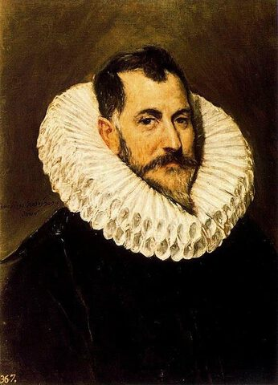

El Greco,1541 - 1614,Mannerism,"Spanish,Greek","Doménikos Theotokópoulos (Greek: Δομήνικος Θεοτοκόπουλος [ðoˈminikos θeotoˈkopulos]; October 1541 – 7 April 1614), most widely known as El Greco (""The Greek""), was a painter, sculptor and architect of the Spanish Renaissance. ""El Greco"" was a nickname, a reference to his Greek origin, and the artist normally signed his paintings with his full birth name in Greek letters, Δομήνικος Θεοτοκόπουλος, Doménikos Theotokópoulos, often adding the word Κρής Krēs, Cretan.",http://en.wikipedia.org/wiki/El_Greco,87
